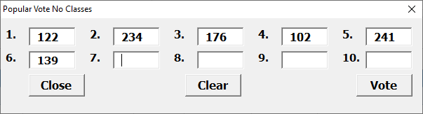
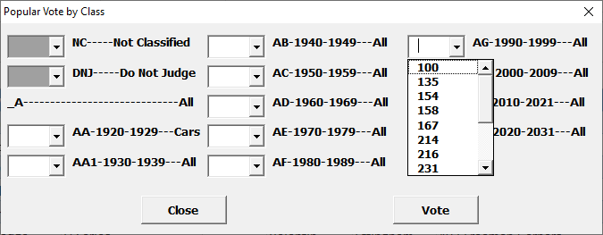
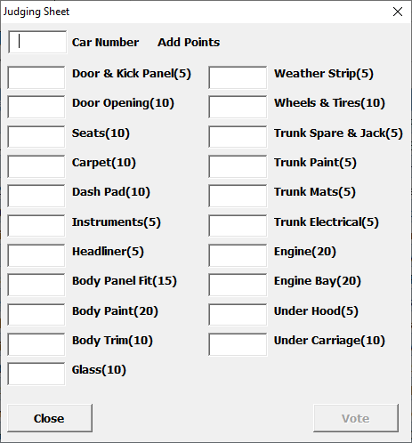

Ballot and Judging data entry dialogs are created dynamically from user selections.
All are designed to prevent errors like:
Voting for the same car twice.
Voting for an non-existent car.
Voting for a car in the wrong class
Adding or deducting more points than specified by the judging sheet.
Like Registration, entering judging sheet or ballot data can be pretty intense but usually has more time. My better half is a wizard with a number pad and can enter data really fast. I need someone to read the numbers while I type them in.
Judging dialog examples:
Popular Vote dialogs are created using the Settings->Judging->Popular Vote selection and the number of Votes Per Ballot. Enter the popular vote car numbers from the participant ballot and click Vote. If a car is voted more than once on a ballot, an error is posted and the ballot will not be processed until it is corrected. If a non-existent car is voted, the votes for all valid cars will be posted. Correct the non-existent car number and click Vote or Clear the non-existent car. Continue entering the available ballots. Click Close when done. The dialog can be closed and reopened as batches of ballots arrive during the show.

Car Show Helper Popular Vote Dialog with 10 Votes Per Ballot
Popular Vote By Class dialogs are created using the Settings->Judging->Popular Vote By Class and Settings->Registration->Class Table selections. Warning! This dialog can become very large if there are a lot of classes. A pull-down list shows the car numbers in each class. Classes with no cars are grayed. Enter the car numbers from the participant ballots and click Vote. If a non-existent or wrong-class car is voted, the votes for all valid cars will be posted. Delete or correct the non-existent or wrong-class car number and click Vote. Continue entering the available ballots. Click Close when done. The dialog can be closed and reopened as batches of ballots arrive during the show.

Car Show Helper Popular Vote by Class Dialog Created using Settings->Registration->PracticeClassTab and Settings->Judging->Popular Vote By Class
Judging dialogs are created using the Settings->Judging table selection. The dialog will note if points are being added or deducted. Enter the car number. Invalid car numbers will turn red and the Vote button will be disabled. Enter the points to be added or deducted for each judging area and click Vote. The maximum points for each judging area are in parentheses. Points above the designated range are counted as maximum. Points less than 0 are counted as 0. Continue entering the available judging sheets. Click Close when done. The dialog can be closed and reopened as batches of judging sheets arrive during the show.

Car Show Helper Judging Dialog Created using Settings->Judging->LargeJudgeTab.